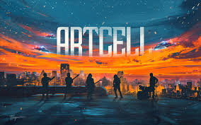

My Favorites

Severus Snape
When I was 10–12 years old, I first started with the fantasy novel series of Harry Potter by J.K. Rowling. I was really intrigued by the book of Half Blood Prince, one of my favorite characters till now. Severus Snape's story is one of redemption, sacrifice, and the complexity of human nature. He is a character who lived in the gray areas between good and evil, driven by love, guilt, and a desire to atone for his mistakes.

Music
I believe
"Music should be your escape"
I am a melomaniac with the Bangladeshi metal band ARTCELL. Dukkho Bilash is the most favorite to me. Their songs reflect the struggles, aspirations and give voice to a generation's hopes, frustrations, and dreams.
Movie, TV Series, Animation
My favorite movie character is Robert Downey Jr. as Iron Man. I love to watch Marvel produced movies. Also, I love to watch Tom Cruise and Christian Bale. One of my favorite TV series is The Big Bang Theory. Its really fun to watch Dragon Ball series. Goku is a resemblance to me as Never Give Up.

Travel
Exploring places and the beauty of nature have always been my source of a way to reconnect with myself. I love to travel solo — pick up your backpack, travel wherever you want. I have travelled all over Bangladesh and visited India. Currently in Pullman, WA and would love to explore the US!